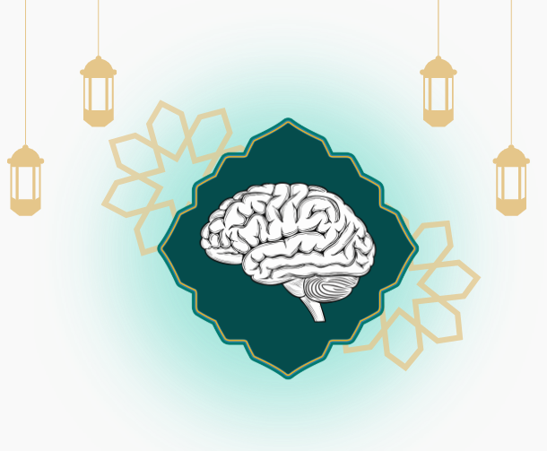

Selamat Datang di
MantiqApp
Pelajari Ilmu Mantiq dengan cara yang sederhana dan mudah dipahami.

Materi Dasar
Penjelasan Ilmu Mantiq dasar dengan bahasa yang mudah dipahami.
Baca Materi →Kalkulator Silogisme
Masukkan dua pernyataan, dan aplikasi akan menarik kesimpulan secara otomatis.
Coba Sekarang →Validator Proposisi
Ketik sebuah pernyataan, dan aplikasi akan mendeteksi jenis proposisinya secara otomatis.
Coba Validasi →Kuis
Uji pemahaman Anda tentang Ilmu Mantiq melalui 10 soal pilihan ganda.
Mulai Kuis →Materi Ilmu Mantiq
Pilih topik yang ingin Anda pelajari
Apa itu Ilmu Mantiq?
Pernahkah Anda berdebat dengan seseorang, tetapi akhirnya justru bingung sendiri? Atau merasa yakin bahwa kesimpulan Anda sudah benar, namun ternyata ada yang keliru dari cara berpikir Anda? Di sinilah peran Ilmu Mantiq menjadi penting.
Kata "Mantiq" berasal dari bahasa Arab yang berarti berpikir atau berkata dengan benar. Dalam tradisi Barat, ilmu ini dikenal sebagai Logika, dari bahasa Yunani logos yang berarti pikiran atau akal.
Ilmuwan besar Ibnu Sina pernah menyatakan: "Ilmu Mantiq adalah alat yang memuat kaidah-kaidah untuk menjaga akal manusia dari ketergelinciran dalam berpikir." Sementara itu, Al-Ghazali menegaskan bahwa seseorang yang tidak menguasai logika, maka otoritas keilmuannya patut dipertanyakan.
Mengapa Ilmu Mantiq Perlu Dipelajari?
- Anda membaca sebuah berita di media sosial, lalu langsung mempercayainya tanpa memverifikasi kebenarannya terlebih dahulu.
- Seseorang menyatakan bahwa "semua politisi itu korup" hanya karena melihat satu kasus — ini merupakan generalisasi yang tidak tepat.
- Anda merasa argumen Anda sudah kuat, padahal premis yang digunakan tidak saling berkaitan.
Manfaat Mempelajari Ilmu Mantiq
Berpikir Lebih Tajam
Melatih akal agar tidak mudah terpengaruh emosi atau prasangka saat mengambil keputusan.
Tidak Mudah Tertipu
Mampu mendeteksi argumen yang tampak benar, tetapi sebenarnya mengandung kekeliruan logika.
Berdiskusi Lebih Efektif
Memahami cara menyusun argumen yang kuat dan merespons argumen lawan secara tepat.
Fondasi Semua Ilmu
Ilmu Mantiq menjadi jembatan bagi semua disiplin ilmu, mulai dari fiqh, filsafat, hingga sains.
Tasawwur & Tashdiq
Dalam Ilmu Mantiq, akal manusia bekerja melalui dua tahap yang saling berkaitan. Memahami keduanya akan membantu kita mengerti bagaimana pikiran kita sebenarnya memproses sebuah informasi.
Tasawwur — Membentuk Konsep
Tasawwur adalah proses ketika akal membentuk gambaran atau konsep tentang sesuatu, tanpa memberikan penilaian benar atau salah. Pada tahap ini, akal hanya "melihat" dan "membayangkan" sesuatu.
- Ketika mendengar kata "apel", secara otomatis muncul gambaran buah berwarna merah atau hijau dalam pikiran Anda — itulah tasawwur.
- Ketika mendengar kata "manusia", Anda membayangkan makhluk berakal dan berbudi — itulah tasawwur.
- Pada tahap ini, Anda belum menilai apakah apel itu enak atau tidak — Anda hanya membayangkan wujudnya.
Tashdiq — Memberikan Penilaian
Tashdiq adalah proses ketika akal mulai memberikan penilaian terhadap sesuatu, apakah pernyataan itu benar atau salah. Tashdiq selalu didahului oleh tasawwur — Anda tidak dapat menilai sesuatu yang belum Anda pahami konsepnya.
- BENAR "Apel adalah buah-buahan."
- SALAH "Apel adalah sayuran."
- BENAR "Semua manusia pasti mengalami kematian."
Dilalah
Pernahkah Anda mencium aroma masakan dari kejauhan, lalu langsung mengetahui bahwa ada orang yang sedang memasak di dekat situ? Proses inilah yang dalam Ilmu Mantiq disebut Dilalah.
- 💣 Asap (dall) → menunjukkan adanya api (madlul).
- 🚨 Lampu merah (dall) → berarti berhenti (madlul).
- 🔥 Wajah merah padam → menunjukkan seseorang sedang marah atau malu.
- ☁ Awan mendung yang gelap → menandakan akan turun hujan.
Macam-Macam Dilalah
Dipahami melalui proses penalaran. Contoh: alam semesta terus berubah → pasti ada Pencipta yang menggerakkannya.
Terjadi secara spontan dan alami tanpa perlu berpikir. Contoh: seseorang menangis → sedang bersedih.
Tanda yang dibentuk atas dasar kesepakatan bersama. Contoh: bendera kuning di depan rumah → ada anggota keluarga yang meninggal dunia.
Proposisi
Dalam Ilmu Mantiq, tidak semua kalimat dapat disebut proposisi. Proposisi (Qadhiyyah) adalah pernyataan yang dapat dinilai benar atau salah. Kalimat tanya dan kalimat perintah bukan termasuk proposisi karena tidak dapat dinilai benar atau salahnya.
• "Semua manusia membutuhkan makan." ✓
• "Kucing adalah hewan." ✓
Bukan Proposisi:
• "Tolong ambilkan air!" ✗
• "Bagaimana kabar Anda?" ✗
Tiga Unsur dalam Setiap Proposisi
- Subjek (Maudhu') = Zaid — pihak yang menjadi pokok pernyataan.
- Predikat (Mahmul) = berdiri — hal yang dinyatakan tentang subjek.
- Penghubung (Rabithah) = sedang — kata yang menghubungkan subjek dan predikat.
Empat Jenis Proposisi
Proposisi diklasifikasikan berdasarkan dua dimensi: kuantitas (semua atau sebagian?) dan kualitas (positif atau negatif?). Kombinasi keduanya menghasilkan empat jenis proposisi:
Kulliyyah Mujibah
Universal Afirmatif
"Semua manusia membutuhkan makan."Kulliyyah Salibah
Universal Negatif
"Tidak ada manusia yang hidup abadi."Juz'iyyah Mujibah
Parsial Afirmatif
"Sebagian hewan dapat terbang."Juz'iyyah Salibah
Parsial Negatif
"Sebagian burung tidak dapat terbang."Tanaqudh — Dua Proposisi yang Saling Bertentangan
Tanaqudh (kontradiksi) terjadi ketika dua proposisi memiliki subjek dan predikat yang sama, namun satu bersifat universal-positif dan yang lainnya parsial-negatif (atau sebaliknya). Akibatnya, salah satu proposisi pasti benar dan yang lainnya pasti salah.
- "Semua manusia adalah makhluk hidup." ↔ "Sebagian manusia bukan makhluk hidup." (A ↔ O)
- "Sebagian bangsa telah merdeka." ↔ "Tidak ada bangsa yang telah merdeka." (I ↔ E)
Qiyas
Qiyas (Silogisme) adalah proses menarik kesimpulan baru dari dua pernyataan yang telah ada. Apabila kedua pernyataan awal tersebut benar, maka kesimpulan yang dihasilkan pasti benar.
Kunci Keberhasilan Qiyas: Term Tengah (Had Awsath)
- Premis Mayor: "Semua manusia pasti mengalami kematian." — kata manusia adalah term tengah.
- Premis Minor: "Socrates adalah manusia." — kata manusia muncul kembali di sini.
- Kesimpulan: "Socrates pasti mengalami kematian." — kata manusia tidak muncul lagi di kesimpulan.
Empat Metode Penarikan Kesimpulan
Dari umum ke khusus. Semua logam menghantarkan listrik → tembaga adalah logam → tembaga menghantarkan listrik.
Dari khusus ke umum. Manusia, sapi, kuda — semua bergerak rahang bawahnya saat makan → semua hewan demikian.
Menyamakan hukum dua hal karena terdapat kesamaan sifat. Tuak disamakan dengan khamar karena sama-sama memabukkan → tuak hukumnya haram.
Kesimpulan dari satu qiyas dijadikan premis bagi qiyas berikutnya, dan seterusnya seperti rantai yang saling terhubung.
Kekeliruan Berpikir
Ilmu Mantiq juga mengajarkan kita untuk mengenali kesalahan-kesalahan umum dalam berpikir yang disebut fallacy. Banyak di antara kita tanpa sadar melakukan kesalahan ini dalam kehidupan sehari-hari.
Faktor-Faktor Penyebab Kesalahan Berpikir
- ⚡ Tergesa-gesa dalam mengambil kesimpulan — belum semua fakta terkumpul, namun sudah langsung membuat penilaian.
- 🤔 Terlalu mudah mempercayai informasi — menerima suatu berita atau pernyataan tanpa terlebih dahulu memverifikasi kebenarannya.
- 🥊 Fanatisme golongan — mempertahankan pendapat semata-mata karena itu adalah pendapat kelompok sendiri, bukan karena dalil yang kuat.
- 💕 Mengikuti hawa nafsu — menarik kesimpulan berdasarkan keinginan atau perasaan, bukan berdasarkan fakta dan logika.
Jenis-Jenis Kekeliruan Logika (Fallacy) yang Umum Terjadi
"Penyakit panu dapat menular → penderita panu harus diasingkan." Kata 'menular' digunakan dengan dua pengertian yang berbeda dalam satu argumen.
"Dia orang Medan dan bersikap keras, berarti semua orang Medan bersikap keras." Satu contoh tidak cukup untuk membuat kesimpulan umum.
"Sampo ini berkualitas baik karena direkomendasikan oleh artis terkenal." Seorang artis bukanlah ahli kimia atau kesehatan — pendapatnya berada di luar bidang keahliannya.
"Mohon dihukum lebih ringan karena saya adalah yatim piatu." Kondisi pribadi seseorang tidak relevan sebagai dasar penilaian atas suatu tindakan.
Kalkulator Silogisme
Masukkan dua pernyataan — sistem akan menarik kesimpulan secara otomatis
Klik salah satu contoh di bawah untuk mencoba langsung:
Semua manusia adalah makhluk fana
Ali adalah manusia
Setiap yang memabukkan adalah haram
Tuak adalah arak yang memabukkan
Setiap nabi adalah makshum
Muhammad adalah nabi
Semua tumbuhan membutuhkan air
Pohon adalah tumbuhan
Semua hewan memerlukan makanan
Kucing adalah hewan
Setiap besi akan memuai jika dipanaskan
Kunci adalah besi
Validator Proposisi
Ketik sebuah pernyataan — sistem akan mendeteksi jenis proposisinya
Panduan Kata Kunci Pendeteksi Jenis Proposisi:
Dimulai dengan: semua, setiap, seluruh + kalimat positif.
Dimulai dengan: tidak ada, tiada, tak satu pun.
Dimulai dengan: sebagian, beberapa, ada yang + kalimat positif.
Dimulai dengan: sebagian/beberapa + mengandung kata tidak/bukan.
Kuis Ilmu Mantiq
10 soal pilihan ganda untuk menguji pemahaman Anda
Siap Mengerjakan Kuis?
Kuis ini terdiri dari 10 soal pilihan ganda yang menguji pemahaman Anda tentang Ilmu Mantiq. Tidak ada batas waktu, jadi bacalah setiap soal dengan saksama.